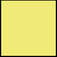
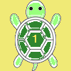

Language / Idioma / 言語
English
Español
日本語
Back to the tutorial
Count down from 3 through 0
Enable JavaScript to navigate every recorded step. / Activa JavaScript para ver todos los pasos. / すべてのステップを見るにはJavaScriptを有効にしてください。
Start
Previous
Next
Finish
Step


Show every step and its board